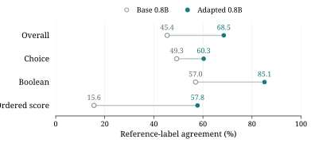
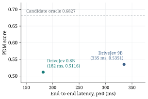

决策接口
回答一个限定的判断，而不是生成一段文本
应用代码需要的往往是一个具体判断：哪个候选匹配目标、某个条件是否在画面中成立、两个物体处于什么空间关系。模型直接给出这个判断，由应用决定后续行为。
| 输入 | 判断 | 输出 |
|---|---|---|
| 图像 ＋ 候选选项 | 视觉匹配 | 候选身份 |
| 图像 ＋ 条件描述 | 视觉条件判断 | 是／否 |
| 图像 ＋ 对象或区域 | 空间关系判断 | 预定义关系 |
上表定义的是任务形式，不是已经取得的通用视觉成绩。通用视觉 benchmark 尚待建立。
{
"image": "<一张图像>",
"questions": [
{ "id": "match", "type": "choice", "candidates": ["候选 A", "候选 B", "以上都不是"] },
{ "id": "visible", "type": "boolean", "criterion": "条件描述" },
{ "id": "relation", "type": "choice", "candidates": ["左", "右", "上", "下"] }
]
}研究路径
文本基础 → 视觉证据 → 高效适配 → 驾驶迁移
每一阶段先回答一个问题，再进入下一阶段。已完成的阶段列出实际验证的内容，未完成的明确标注状态。
-
已完成
文本决策基础
小模型能否学会有限选项的决策接口？0.8B 与 9B 的文本复现已完成。
-
已完成
多模态管线
真实图像是否正确进入训练与决策推理？训练、重载与真实单图推理已验证贯通。
-
进行中
视觉决策质量
模型是否使用了问题所需的视觉证据？这是当前的研究重点。
-
计划中
视觉决策效率
完成一次判断需要多少视觉计算？受控 token 预算与适配实验尚待开展。
-
已有结果
驾驶迁移
视觉提升能否改善规划判断？已有 NAVSIM 评测保留在 DriveJev 分支，迁移实验尚未开始。
正在研究
- 真实视觉决策
- 配对换图诊断
- token 预算与模态对齐
- 陌生轨迹评价
- 规划修正
当前 critic 与大规模矩阵实验尚无最终全量结果；闭环验证与延迟影响验证未完成。
实验结果
文本决策基础
使用 2,676 条训练样本与 324 条留出样本，我们在两种模型规模上复现了 Nimble 的训练配方。
| 模型 | 基座 | 适配后 原始实验 |
GPU 独立复评 |
|---|---|---|---|
| Qwen3.5-0.8B | 45.37% | 68.52% | 68.21% |
| Qwen3.5-9B | 66.05% | 87.04% | 87.35% |

这些是文本留出集成绩，不是视觉准确率。GPU 独立复评与原始实验各相差一个平局样本，两次结果分别列出。
多模态能力
管线已经贯通，能力仍在建立
Qwen3.5 原生视觉编码器、图像处理、语言侧 LoRA、候选 token 读出与真实单图推理已经贯通。这是管线证据，用于说明接口可以端到端跑通。
| 图像 token | 用途 | 能说明什么 |
|---|---|---|
| 1,008 | 真实单图示例 | 接口跑通，且该帧判断正确。不是总体视觉能力成绩。 |
| 364 | 已完成的驾驶评测 | DriveJev 的 NAVSIM 评测使用该预算。 |
| 480 | 新研究战役 | 与历史 364 配置属于不同处理预算，不得混写。 |
单图示例只证明接口贯通，不能作为总体视觉能力成绩。通用视觉 benchmark 尚待建立，当前没有可发布的视觉准确率数字。
下游应用
DriveJev：自动驾驶规划判断
DriveJev 是 VisionJev 的下游应用，保留在同一个仓库的 drivejev 分支。以下为已完成的 NAVSIM 评测结果。
| 模型 | PDM | 端到端中位延迟 |
|---|---|---|
| DriveJev 0.8B | 0.5116 | 182 ms |
| DriveJev 9B | 0.5351 | 335 ms |
| 同候选池离线 oracle | 0.6827 | — |

口径说明
- 延迟为 H800、BF16、batch=1 的端到端中位延迟，图像预算 364 token。
- 两个模型的驾驶训练轮数不同，不应据此比较模型规模的影响。
- 这些数字不代表"通用视觉预训练已经提升驾驶表现"。迁移实验尚未开始。
- 没有官方 leaderboard 提交记录。
引用
如何引用
使用本研究时，请引用 VisionJev，并记录分支、代码 revision、模型或 adapter revision，以及数据集 release 或 split manifest。使用驾驶实验时，请另外引用 DriveJev。
VisionJev
@misc{visionjev2026,
author = {{VisionJev Contributors}},
title = {{VisionJev}: Small Multimodal Models for Structured Visual Decisions},
year = {2026},
url = {https://github.com/derekshiii/VisionJev}
}思想来源
System One 接口与 Jev 的研究方向启发了本项目的目标形态。VisionJev 是独立研究，不是 TypeSafe 或 Jev 的官方产品。
Introducing System One Models and Jev